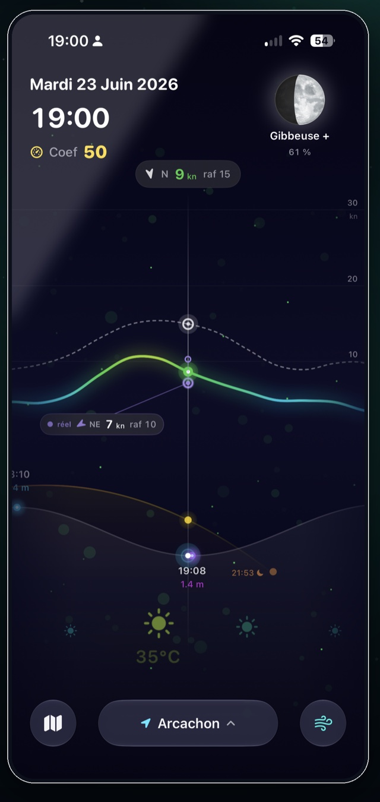
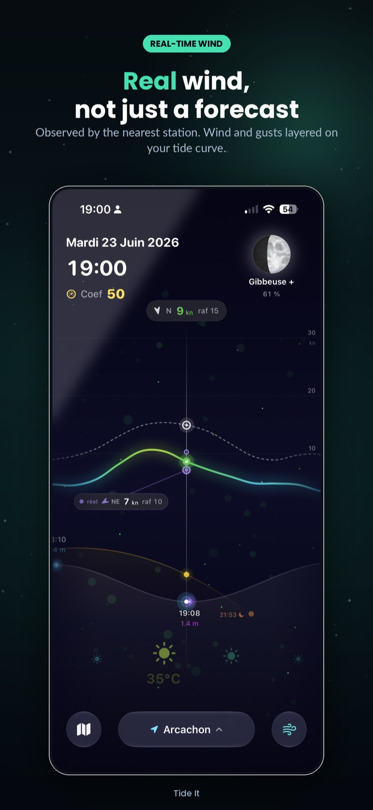
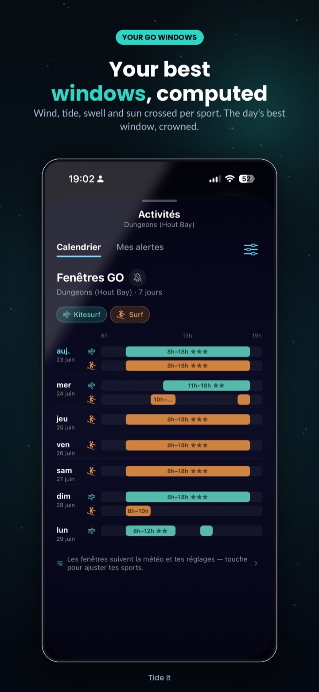
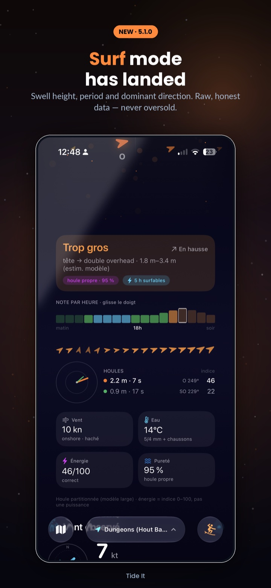
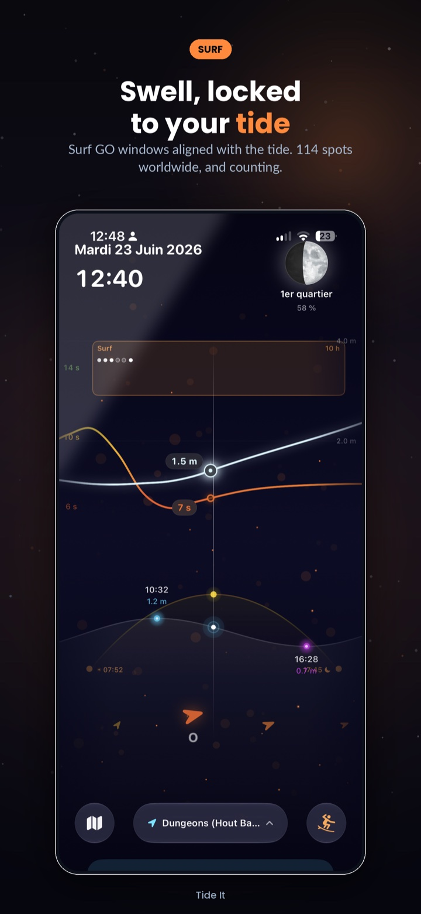
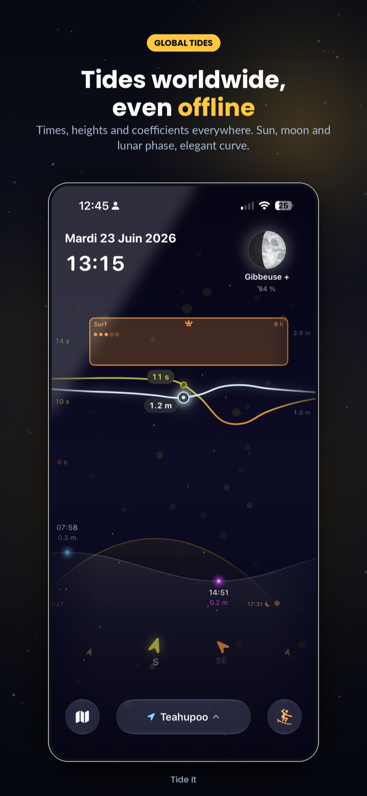
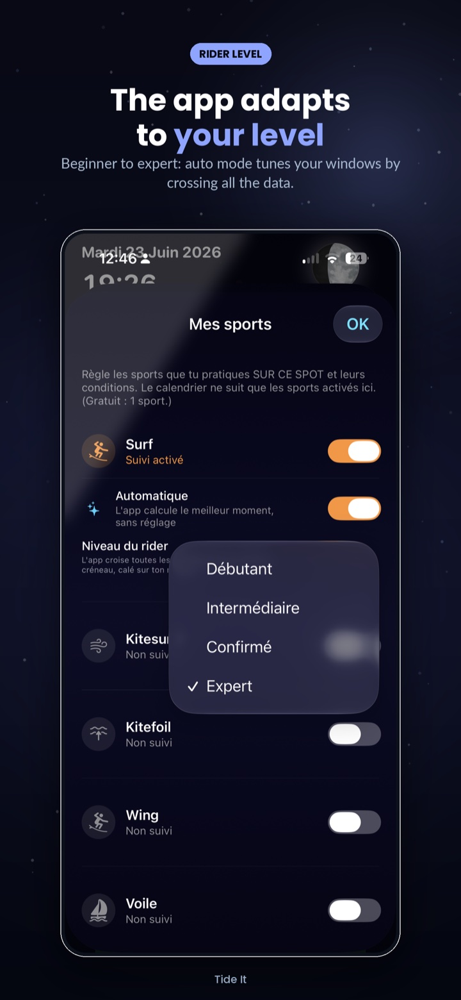
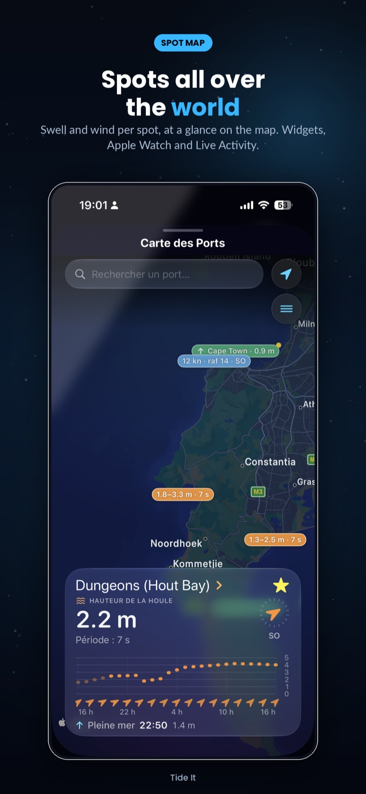

Real wind, not just a forecast
The station closest to your spot: speed, gusts, direction, reading freshness — and the gap vs the forecast, shown without spin.
Tide It crosses the tide, the wind measured by the nearest station and the swell to tell you when to hit the water. Kitesurf, wingfoil, sailing, surf.

The wind now comes with a measured verdict:
Steady Irregular Gusty— and it weighs on your GO windows.
No tab-hopping, no mental math: one curve fuses what you used to check across four apps.
The station closest to your spot: speed, gusts, direction, reading freshness — and the gap vs the forecast, shown without spin.
Wind, tide, swell and daylight crossed against YOUR settings and your level. 7 days of slots, rated 1 to 5 stars.
Steady, irregular or gusty: the station's gust-to-average ratio, measured — never guessed. Choppy wind scores lower, just like on the water.
Dominant swell, period, energy, purity and breaking interval. 284 spots in 64 countries — with your tide underneath.
Times, heights, coefficients — computed on-device with harmonic analysis. Available offline, everywhere.
Your next tide on the lock screen, your wrist and the Dynamic Island — designed to go easy on your battery.
Many apps smooth, interpolate and fill in the gaps. Tide It does the opposite: what isn't measured isn't shown.







← Swipe →
Tide It shows two distinct winds: the weather-model forecast, and the wind actually measured by the anemometer station closest to your spot — speed, gusts, direction and the age of the reading. The two are never silently blended. Detailed attribution of the measurement networks lives in the app (Settings ▸ About).
A slot where conditions match your sport and your level: wind in your range, enough water depth, safe direction, swell and wind steadiness taken into account. Computed over 7 days, rated 1 to 5 stars.
Yes. Tides are computed on-device and stay available offline. Only wind, weather and swell need a connection.
Tide It covers 3,500+ ports and 284 surf spots in 64 countries. If yours is missing, create a custom spot at your exact position — it gets its own tide, wind and GO windows.
None of the three. No ads, no ad SDK, no third-party analytics, no account to create. Your settings stay on your device (and your personal iCloud for sync).
At install, Premium is activated free for 1 month, with no commitment and no payment method required. When it ends, the app automatically returns to the free tier — nothing to cancel.
No. Tide It is a decision aid for water sports and leisure. For navigation, always refer to official documents and bulletins from maritime authorities.
Free on iPhone and Apple Watch. First Premium month on us.
Download on theApp Store